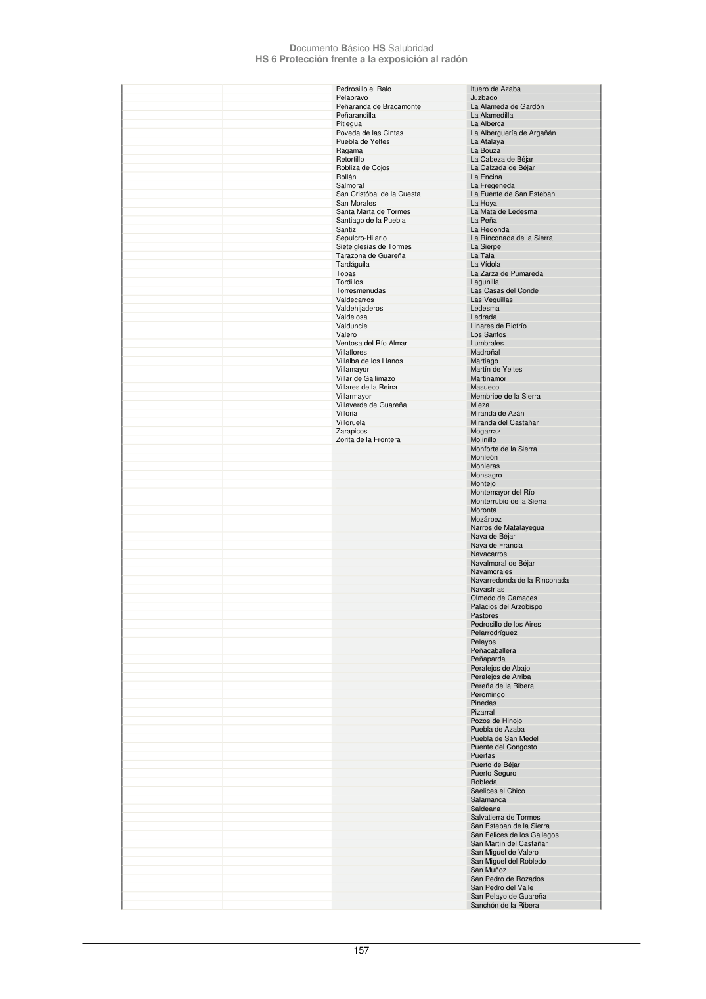

DB-HS Salubridad · edición 2022-06-14 · capa oficial
Documento DB-HS-oficial · SHA-256 del PDF 68df3caacc95f71aee2ec1ba7b2c65ae66155c21e3a8785521b8fdd4fd640d3b
Página física 157 de 184.
Copia fiel del PDF fuente · Fuente oficial
Ficha de la disposición en la fuente oficial
Formato: Texto de la página (Markdown)
Documento Básico HS Salubridad HS 6 Protección frente a la exposición al radón 157 Pedrosillo el Ralo Ituero de Azaba Pelabravo Juzbado Peñaranda de Bracamonte La Alameda de Gardón Peñarandilla La Alamedilla Pitiegua La Alberca Poveda de las Cintas La Alberguería de Argañán Puebla de Yeltes La Atalaya Rágama La Bouza Retortillo La Cabeza de Béjar Robliza de Cojos La Calzada de Béjar Rollán La Encina Salmoral La Fregeneda San Cristóbal de la Cuesta La Fuente de San Esteban San Morales La Hoya Santa Marta de Tormes La Mata de Ledesma Santiago de la Puebla La Peña Santiz La Redonda Sepulcro-Hilario La Rinconada de la Sierra Sieteiglesias de Tormes La Sierpe Tarazona de Guareña La Tala Tardáguila La Vídola Topas La Zarza de Pumareda Tordillos Lagunilla Torresmenudas Las Casas del Conde Valdecarros Las Veguillas Valdehijaderos Ledesma Valdelosa Ledrada Valdunciel Linares de Riofrío Valero Los Santos Ventosa del Río Almar Lumbrales Villaflores Madroñal Villalba de los Llanos Martiago Villamayor Martín de Yeltes Villar de Gallimazo Martinamor Villares de la Reina Masueco Villarmayor Membribe de la Sierra Villaverde de Guareña Mieza Villoria Miranda de Azán Villoruela Miranda del Castañar Zarapicos Mogarraz Zorita de la Frontera Molinillo Monforte de la Sierra Monleón Monleras Monsagro Montejo Montemayor del Río Monterrubio de la Sierra Moronta Mozárbez Narros de Matalayegua Nava de Béjar Nava de Francia Navacarros Navalmoral de Béjar Navamorales Navarredonda de la Rinconada Navasfrías Olmedo de Camaces Palacios del Arzobispo Pastores Pedrosillo de los Aires Pelarrodríguez Pelayos Peñacaballera Peñaparda Peralejos de Abajo Peralejos de Arriba Pereña de la Ribera Peromingo Pinedas Pizarral Pozos de Hinojo Puebla de Azaba Puebla de San Medel Puente del Congosto Puertas Puerto de Béjar Puerto Seguro Robleda Saelices el Chico Salamanca Saldeana Salvatierra de Tormes San Esteban de la Sierra San Felices de los Gallegos San Martín del Castañar San Miguel de Valero San Miguel del Robledo San Muñoz San Pedro de Rozados San Pedro del Valle San Pelayo de Guareña Sanchón de la Ribera

Datos candidatos: compruebe celdas y notas en el PDF.